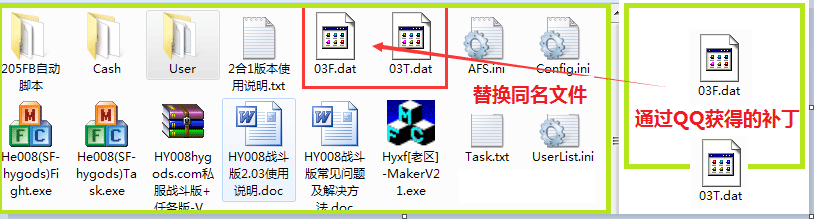
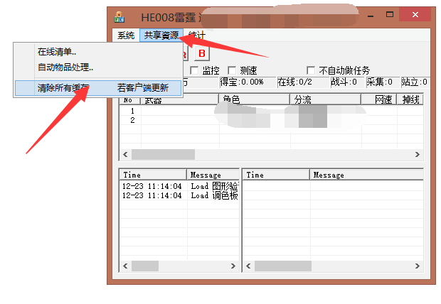

| 序号 | 步骤 | 说明 |
|---|---|---|
| 1. | 如何更新外挂补丁
如果外挂更新了，怎么打补丁？ |
一般是替换某个文件，比如主程序，直接替换同名文件即可。 也可能是03.dat，03F.dat，03T.dat，也是直接替换同名文件即可。 注意，QQ接收这个文件可能会改名03F(1).dat之类，你替换时必须改成03F.dat，否则替换无效。替换之后，外挂重启，即可。 |
| 2. | 游戏客户端更新
游戏客户端更新了，外挂不能用了，如果更新外挂？ |
1、外挂主控台菜单->共享资源->清除所有缓存。 2、重启外挂，即可。  |